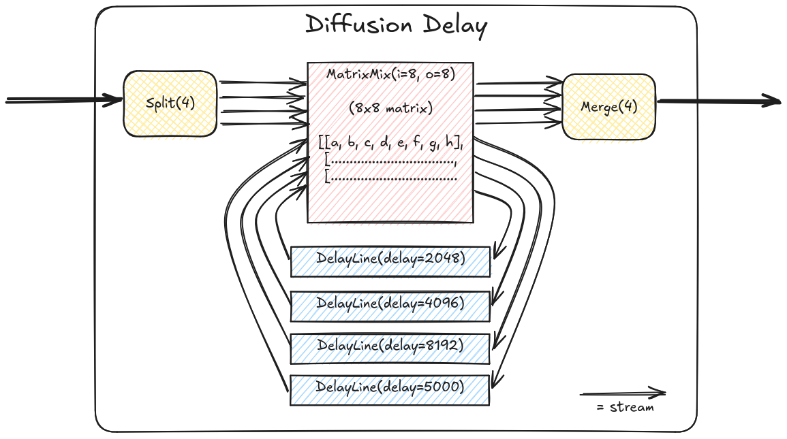

non-SoC projects
All Projects
dsp
Designs demoing parts of the DSP library. Build any of them as follows:
# from `gateware` directory. Show all available example cores -
pdm dsp -h
# build an example core
pdm dsp build --dsp-core nco
- class top.dsp.top.Mirror(*args, src_loc_at=0, **kwargs)
Route audio inputs straight to outputs (in the audio domain). This is the simplest possible core, useful for basic tests.
- class top.dsp.top.QuadNCO(*args, src_loc_at=0, **kwargs)
Audio-rate oscillator (NCO) with internal oversampling. 4 different waveform outputs.
in0: V/oct pitch in1: phase modulation out0: sine out1: saw out2: tri out3: square
- class top.dsp.top.Resampler(*args, src_loc_at=0, **kwargs)
Resample different channels to a different sample rate (and back). Not very musically interesting
- class top.dsp.top.ResonantFilter(*args, src_loc_at=0, **kwargs)
High-, Low-, Bandpass with cutoff & resonance control.
in0: audio in in1: cutoff (0V == off, ~5V == open) in2: resonance (0V == min, ~5V == crazy)
out0: LPF out out1: HPF out out2: BPF out
- class top.dsp.top.DualVCA(*args, src_loc_at=0, **kwargs)
Audio-rate VCA.
- class top.dsp.top.Pitch(*args, src_loc_at=0, **kwargs)
PSRAM-backed pitch shifter with CV-controlled pitch. Grain size is quite large (~250ms) to reduce fluttering.
- class top.dsp.top.Matrix(*args, src_loc_at=0, **kwargs)
Matrix mixer with fixed coefficients.
- class top.dsp.top.DualWaveshaper(*args, src_loc_at=0, **kwargs)
Soft distortion, channel 1/2 inputs, 3 is overdrive gain.
- class top.dsp.top.TouchMixTop(*args, src_loc_at=0, **kwargs)
Matrix mixer, combine touch inputs in interesting ways.
- class top.dsp.top.PSRAMPingPongDelay(*args, src_loc_at=0, **kwargs)
2-channel stereo ping-pong delay, backed by external PSRAM.
2 delay lines are instantiated in isolated slices of the external memory address space. Using external memory allows for much longer delay times whilst using less resources, compared to SRAM-backed delay lines, however on a larger design, you have to be careful that PSRAM-backed delay lines don’t get starved by other PSRAM traffic (i.e video framebuffer operations).
Tiliqua input 0/1 is stereo in, output 0/1 is stereo out.
- class top.dsp.top.SRAMPingPongDelay(*args, src_loc_at=0, **kwargs)
2-channel stereo ping-pong delay, backed by internal SRAM.
Tiliqua input 0/1 is stereo in, output 0/1 is stereo out.
- class top.dsp.top.PSRAMDiffuser(*args, src_loc_at=0, **kwargs)
PSRAM-backed 4-channel feedback delay, diffused by a matrix mixer.
A block diagram of the signal flow inside this demo:
All 4 input channels are inputs. All 4 output channels are outputs.
{kind=link}
- class top.dsp.top.SRAMDiffuser(*args, src_loc_at=0, **kwargs)
SRAM-backed 4-channel feedback delay, diffused by a matrix mixer.
- class top.dsp.top.PSRAMMultiDiffuser(*args, src_loc_at=0, **kwargs)
Kind of ridiculous 3x chained diffusers (4x4 diffuser into 4x4 diffuser into 4x4 diffuser).
All 4 input channels are inputs. All 4 output channels are outputs.
Be careful with the input amplitude on this one, it clips inside the diffuser multipliers pretty easily and can be a bit unstable.
Sounds pretty close to a REALLY long reverb. A single diffuser suffices for most real audio applications, but this one is a bit crazy :).
Its also useful for stress-testing the memory interface logic.
With 2x PSRAM-backed diffusers that’s 8x simultaneous 48kHz audio streams hitting the PSRAM (4 write streams, 4 read streams). In simulation the PSRAM controller is blocking ~15% of the time. Looking at the traces it seems the cache is bursting twice as often as it really needs to (in theory), so probably tweaking the cache architecture could get the PSRAM bandwidth consumption down considerably.
usb_audio
4-channel USB2 audio interface, based on LUNA project. Enumerates as a 4-in, 4-out 48kHz sound card.
usb_host
Extremely bare-bones USB MIDI host demo. EXPERIMENTAL.
*WARN* This demo hardwires the VBUS output to ON !!! *WARN*
At the moment this is only used for Tiliqua hardware validation. NOTE: the MIDI USB configuration and endpoint IDs are hard-coded below.
At the moment, all the MIDI traffic is routed to CV outputs according to the existing example (see docstring) in top/dsp:MidiCVTop.
vectorscope_no_soc
CRT / Vectorscope simulator. Rasterizes X/Y (audio channel 0, 1) and color (audio channel 3) to a simulated CRT display, with intensity gradient and afterglow effects.
Simple gateware-only version, this is mostly useful for debugging the memory and video subsystems with an ILA or simulation, as it’s smaller.
See ‘xbeam’ for SoC version of the scope with a menu system.
# for visualizing the color palette
$ pdm colors_vectorscope
- class top.vectorscope_no_soc.top.VectorScopeTop(*args, src_loc_at=0, **kwargs)
Top-level Vectorscope design.
- top.vectorscope_no_soc.top.colors()
Render image of intensity/color palette used internally by DMAFramebuffer. This is useful for quickly tweaking it.